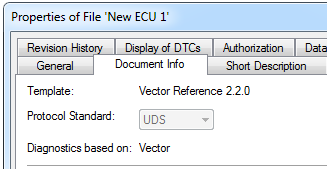
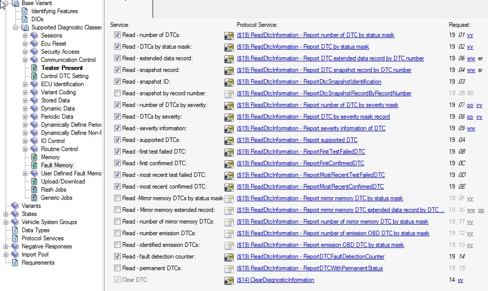
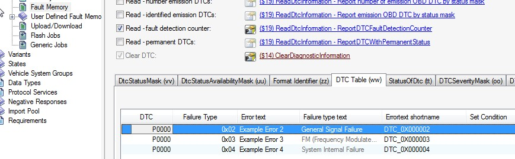
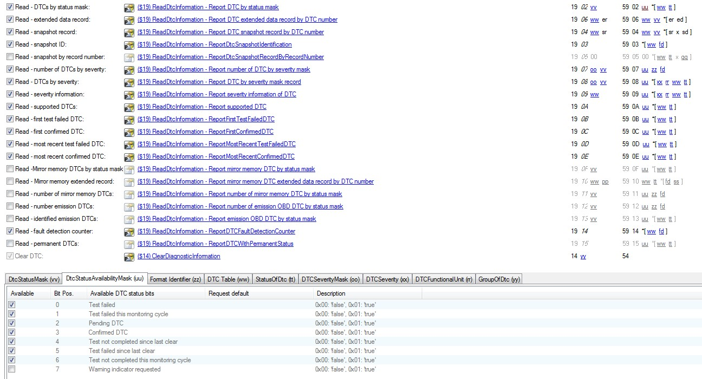
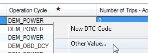
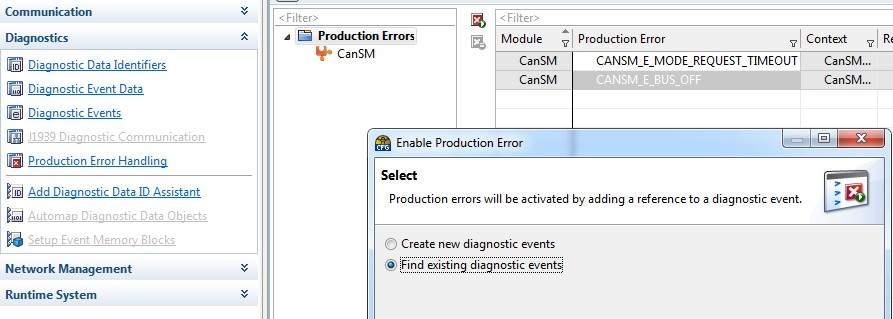

This document describes the configuration of diagnostics in MICROSAR Dcm/Dem using CANdela documents (.cdd files).
It is valid for documents based on a template for Manufacturer "Vector", version 2.2.0 or newer.
Check the "Manufacturer" ("OEM") in CANdelaStudio via Ribbon File | Properties: navigate to "Document Info" to determine if your CANdela document has been specified for OEM Vector:

"Diagnostics based on" - OEM setting in CANdelaStudio
Note: CANdela documents based on OEM templates for a different diagnostic specification may be modelled differently. Nevertheless, there may be identical parts, and this document can give further information how to configure OEM specific CANdela documents.
This chapter describes the DTC and Event configuration for the Dem.
Fault memory service configuration is provided in diagnostic class "Fault Memory" on each variant.
The UDS Service 0x14 and 0x19 with various sub-functions are used to access the fault memory.
Most ECUs will use only a subset of all possible UDS services.
Use the checkboxes in front of each Protocol Service to activate or deactivate a given sub-function for the service 0x19.
Service 0x14 (ClearDTC) is mandatory.

Fault Memory
In CANdelaStudio 12, Events have become distinct objects, described besides DTCs. See the checkbox "Support Events" [DOCUI-R600] whether the feature has been enabled in your document.
In this configuration, you can describe the distinct Events directly in the Fault Memory page "Events".
In CANdela documents...
DTCs and Events have a common source and are treated to have a 1:1 relation.
In that configuration, CANdelaStudio shows Event properties...

DTC Table
| CANdelaStudio DTC Parameter | Valid Values | MICROSAR ECUC Parameter |
|---|---|---|
| DTC | [0x00 - 0xFFFF] (as first two bytes of DTC value) | DemUdsDTC (Byte#1 and Byte#2) |
| Failure Type | [0x00 - 0xFF] | DemUdsDTC (Byte#3) |
| Errortext shortname | Text string; blanks are replaced by underscore | DemDTCClass.ShortName and DemEventClass.ShortName |
| DTC Priority | [1 - 255] | DemEventClass.DemEventPriority |
| DTC Severity |
|
DemDTCClass.DemDTCSeverity |
| Functional Unit | [0 - 255] Required only if UDS 0x19 08 and 0x19 09 is used. Value can be configured but is not used for other UDS services. |
DemDTCClass.DemDTCFunctionalUnit |
| Number of Trips - Active | [0 - 255] | DemEventClass/ DemEventFailureCycleCounterThreshold |
| Monitor Initialization Function |
|
DemEventParameter/ DemCallbackInitMForE is added if set to "required" |
The global supported DTC status mask DemGeneral/DemDtcStatusAvailabilityMask is derived from the definition of the DTCStatusAvailabilityMask from the positive response 59 02.

Supported DTCStatusAvailabilityMask of 0x39, derived from positive response definition of 59 02
| CANdelaStudio DTC Parameter | Valid Values | MICROSAR ECUC Parameter |
|---|---|---|
| Set WarningIndicatorBit at fault |
|
If set to "supported", the container DemIndicatorAttribute is created. |
A DemIndicator "WarningIndicator" is created by default.
| CANdelaStudio DTC Parameter | Valid Values | MICROSAR ECUC Parameter |
|---|---|---|
| Enable Conditions | Comma separated list of enable conditions. Each element in the comma separated list defines a short-name. | One container DemEnableCondition per occurrence of each enable condition string in the entire DTC table. One DemEnableConditionGroup per permutation having the same enable condtions (one or more) assigned to a DTCs. DemEnableConditionGroupRef set to the corresponding DemEnableConditionGroup. |
Operation cycles control certain life time properties of event and DTCs. An Event is only processed if the assigned operation cycle is qualified.
If properties such as aging are linked to operation cycles, the Dem triggers certain changes upon cycle state changes.
Operation cycles are created when a configured DTC references the operation cycle in a CANdelaStudio DTC Parameter:
Predefined list of operation cycles:
DEM_IGNITIONDEM_POWERDEM_WARMUPDEM_OBD_DCYYou may define further operation cycles by setting the operation cycle column to the name of the operation cycle. Use the "Other value" from the context menu:

Set custom operation cycle name
Aging is defined as resetting the confirmed bit from the UDS DTC status byte.
| CANdelaStudio DTC Parameter | Valid Values | MICROSAR ECUC Parameter |
|---|---|---|
| Aging Cycle |
|
DemAgingCycleRef |
| Aging supported |
|
DemAgingAllowed |
| Aging cycle counter threshold | 0..255 | DemAgingCycleCounterT hreshold |
Healing is defined as resetting the warning indicator (WIR), Bit7 of the UDS DTC Status byte. Healing requires that
| CANdelaStudio DTC Parameter | Valid Values | MICROSAR ECUC Parameter |
|---|---|---|
| Set WarningIndicatorBit at fault |
|
If set to "supported" the container DemIndicatorAttribute is created. |
Operation Cycle (derived into various configuratio ns) |
|
DemIndicatorAttribute. DemIndicatorFailureCycleRef |
DemIndicatorAttribute. DemIndicatorFailureCycleRef Always set to „PowerCycle" |
Debouncing allows reported faults to be accepted as "qualified failed" only in case of repeated failure. A single failure report is not accepted as failure. The MICROSAR Dem provides two debouncing algorithms that are configured in CANdelaStudio.
| CANdelaStudio Column | Required value | MICROSAR ECUC parameter |
|---|---|---|
| Pre-Debounce Algorithm | Set to "Counter based" | DemDebounceAlgorithmClass/DemDebounceCounterBased |
| Count-In step size | [1..32767] | DemDebounceCounterIncrementStepSize |
| Count-out step size | [1..32768] | DemDebounceCounterDecrementStepSize |
| Use Jump-Up (Prefailed) | yes | DemDebounceCounterJumpUp |
| Use Jump-Down (Prepassed) | yes | DemDebounceCounterJumpDown |
| DTC Passed Threshold | [-32768..-1] | DemDebounceCounterPassedThreshold |
| DTC Failed Threshold | [1..32767] | DemDebounceCounterFailedThreshold |
| DTC Storage Threshold | [1..32767] | DemEventDebounceCounterStorageThreshold |
Note that for DEXT based diagnostic configuration, all the elements for counter based debouncing are mandatory as the DEXT schema requires them. If one attribute is empty, no counter based debouncing information will be exported to DEXT.
| CANdelaStudio DTC Parameter | Valid Values | MICROSAR ECUC Parameter |
|---|---|---|
| Pre-Debounce Algorithm | Set to "Time based" | DemDebounceAlgorithmClass/DemDebounceTimeBased |
| DTC Debounce Failed Timeout Value | [0 - 3.600.000] ms | DemDebounceTimeBase/DemDebounceTimeFailedThreshold |
| DTC Debounce Passed Timeout Value | [0 - 3.600.000] ms | DemDebounceTimeBase/DemDebounceTimePassedThreshold |
| DTC Storage Threshold | [0 - 3.600.000] ms | DemDebounceTimeStorageThreshold |
The type of snapshot record numeration and data capture time is configured globally in DemTypeOfFreezeFrameRecordNumeration.
If AUTOSAR Fault Memory has been enabled [FM-D200-AUTOSAR] (since v13), there is a distinct property: Snapshot Numeration Type [DI-R310]. You can configure the property in the property dialog of the Fault Memory Diagnostic Instance.
In the generic data model, in order to specify a different value using an attribute [FM-D200-Generic], see [SR-R023].
MICROSAR BSW modules can report "BSW events" to the Dem module. DTCs for BSW event are created and added in the CANdelaStudio DTC list, as any other DTC.
DaVinci Configurator creates an DemEventParameter and DemDTCClass per CANdelaStudio DTC. Use the "Production Error Handling" Wizard to let the BSW event reference any of the existing DemEventParameter.

BSW Events in daVinci Configurator